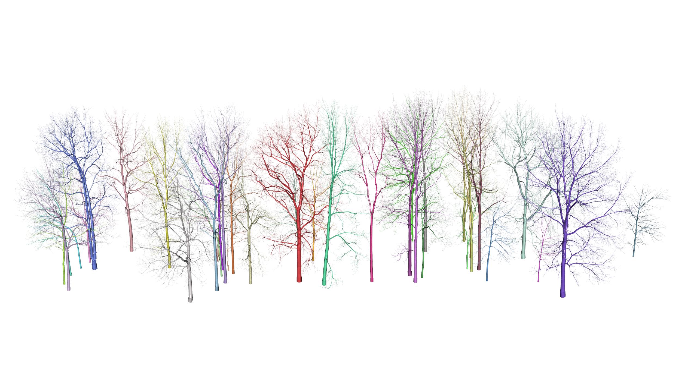

Description
Real Twig is a method to correct unrealistic cylinders in quantitative structure models (QSMs), especially overestimated small branch and twig cylinders. Real Twig is different than traditional allometric or statistical corrections. Real Twig uses real twig diameter measurements from corresponding tree species to inform individual branch taper models. Real Twig dynamically identifies realistic cylinders in a QSM using network analysis, general additive models, and real twig measurements, to model and correct unrealistic cylinders with a high degree of precision and accuracy when vetted against ground truth reference data.
Real Twig does much more than correct QSM cylinder radii. Real Twig includes tools for QSM visualization and analysis that are seamlessly compatible with base R and popular packages such as the Tidyverse. Real Twig also includes fast, vectorized functions for point cloud fractal analysis and visualization using the box-dimension metric. Also included is a novel database of twig diameter measurements for many common North American and European trees, on both the species and genus level.

Functions
-
run_rtwig()runs the main Real Twig steps -
import_qsm()imports a QSM created by TreeQSM (.mat) -
import_treegraph()imports a QSM created by treegraph (.json) -
update_cylinders()updates cylinder relationships and adds new QSM variables -
correct_radiimodels QSM paths and corrects cylinder radii -
qsm_summary()summarizes QSM diameter, height, volume, and surface area -
smooth_qsm()connects cylinder end-to-end to smooth branch visualization -
plot_qsm()plots an individual QSM optionally with its point cloud -
plot_stand()plots multiple QSMs optionally with their point cloud -
export_mesh()exports a QSM as a mesh object (.ply) -
export_mat()exports a QSM in a MATLAB format (.mat) -
box_dimension()calculates and visualizes the structural complexity of a point cloud
Installation
You can install the released version of rTwig from CRAN with:
install.packages("rTwig")You can install the development version of rTwig from GitHub with:
# install.packages("devtools")
devtools::install_github("aidanmorales/rTwig")Quick Start: QSM Radii Correction
QSM radii corrections are run as a chain of function that build on one another. The general processing chain is as follows:
- Import a QSM: TreeQSM, SimpleForest and treegraph are currently supported.
- Calculate new variables with consistent QSM structure to allow for network analysis.
- Correct the small branch and twig cylinders using real twig diameter measurements.
- Summarize and visualize the results.
Below are examples of how to quickly run Real Twig on TreeQSM and SimpleForest QSMs, using example data from the package. See the vignettes for more details on a general workflow and best practices.
TreeQSM
# Load the Real Twig library
library(rTwig)
# File path to QSM
file <- system.file("extdata/QSM.mat", package = "rTwig")
# Correct QSM cylinders
qsm <- run_rtwig(file, twig_radius = 4.23)
# Plot the result
plot_qsm(qsm$cylinder)SimpleForest
# Load the Real Twig library
library(rTwig)
# File path to QSM
file <- system.file("extdata/QSM.csv", package = "rTwig")
# Correct QSM cylinders
qsm <- run_rtwig(file, twig_radius = 4.23)
# Plot the result
plot_qsm(qsm)Quick Start: Box Dimension
Below is an example of how to quickly calculate box-dimension on a point cloud using example data from the package. See the vignette for more details and explanation.
# Load a point cloud
file <- system.file("extdata/cloud.txt", package = "rTwig")
cloud <- read.table(file)
# Calculate box-dimension
output <- box_dimension(cloud)
output[[2]]$slope